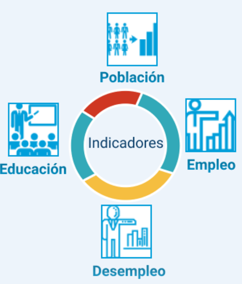

HACEMOS
Analiza los principales indicadores de desarrollo de Perú, México, Brasil y Chile que necesitas para llevar a cabo tus trabajos de investigación universitaria. Aquí encontrarás data obtenida del WORLDBANK del año 1960 al año 2017, presentada en tablas y gráficas correspondientes a múltiples indicadores que hemos clasificado en cuatro tipos: población, educación, empleo y desempleo; esto con el fin de hacer mas rápida su búsqueda.

Dashboard
Inicio / Indicadores
Tipo de Indicadores
Indicadores de Población:
Indicadores de Educación Nivel Terciaria:
Indicadores de Educación Nivel secundaria:
Indicadores de Empleo:
Indicadores de Desempleo: